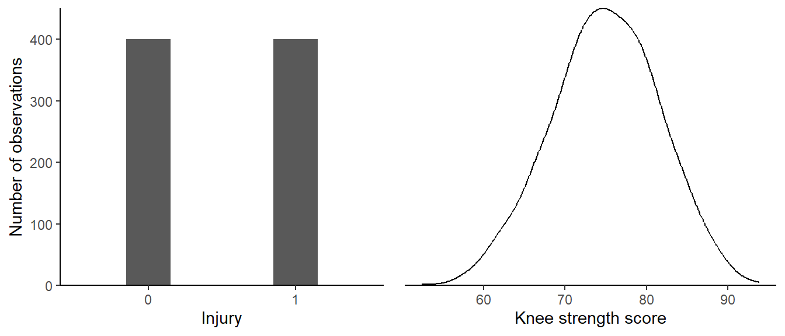
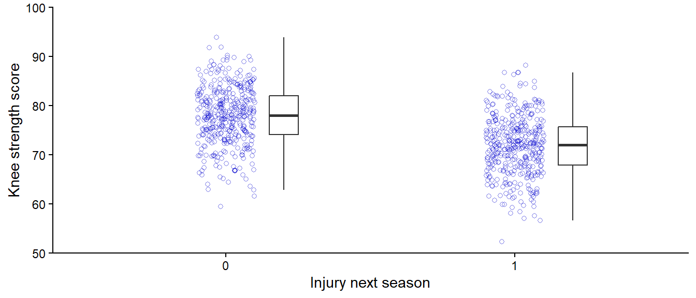
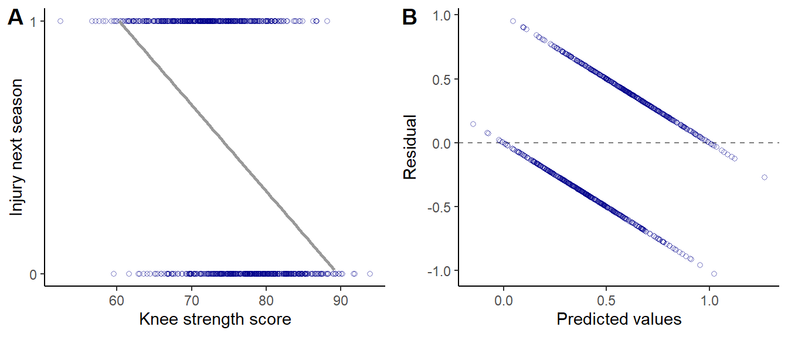
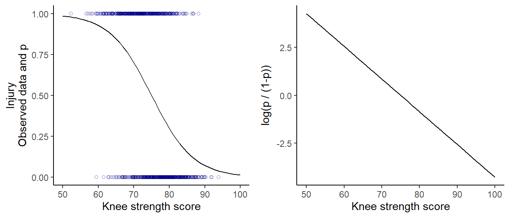

So far, we have talked about a linear model that assumes normally distributed errors. These models fit data to find parameter values to describe the mean and the standard deviation of the normal distribution. Sometimes, these assumptions are not valid, for example, when we have data that cannot be used to describe a normal distribution. Luckily, there are also tricks to model other distributions. Generalized linear models are a class of models that allow us to specify alternative distributional assumptions.
11.1 Football injuries
Using a large data set of Chinese university football players, we will be able to examine the effect of muscle strength on future injuries (Yuan 2025)1. The primary outcome variable is a binary variable set to 0 when a player did not suffer an injury leading to more than 6 days of absence, and 1 when a player did suffer an injury. We will assess the association between knee strength and injury.
1 The data set was found on kaggle, and the documentation does not seem to contain any references to departments or clubs involved in any data collection. Additionally, the data includes several variables that appear to have no irregularities or outliers. Some are perfectly balanced, while others seem to have very strong associations. Together, these observations make me question the authenticity of the data. But the data set will serve as a nice example for generalized linear models.
11.1.1 Explorative analysis
The variable Injury_Next_Season is perfectly balanced between injured and non-injured, and the strength score variable is following a symmetric distribution (Figure 11.1). We will hypothesize that the strength score is associated with injury. Players with higher strength scores should be less likely to end up injured.
Code
library(tidyverse)library(exscidata)dat <- exscidata::injuryp1 <- dat |>summarise(.by = Injury_Next_Season, n =n()) |>ggplot(aes(as.factor(Injury_Next_Season), n )) +geom_bar(stat ="identity", width =0.3) +theme_classic() +scale_y_continuous(expand =c(0,0), limits =c(0, 450)) +labs(x ="Injury", y ="Number of observations")p2 <- dat |>ggplot(aes(Knee_Strength_Score)) +geom_density() +theme_classic() +theme(axis.title.y =element_blank(), axis.text.y =element_blank(),axis.ticks.y =element_blank(),axis.line.y =element_blank()) +scale_y_continuous(expand =c(0,0)) +labs(x ="Knee strength score")cowplot::plot_grid(p1, p2)

Figure 11.1: Distribution of two variables from the injury data set.
To perform this analysis, we could simply compare the injured to the non-injured for their strength score (Figure 11.2). And indeed, injured players do seem to have lower knee strength. This analysis could be extended to include a hypothesis test and an estimate of the difference between groups. However, the analysis implies that we predict the strength score based on injury status, even though the injury occurs afterward. Additionally, we might want to add more variables in our analysis, e.g., to see if results differ between player position or stress levels. Such an extended analysis is most easily done using a regression model. In summary, we want to have injury status as the dependent variable in our analysis.
Code
dat |>ggplot(aes(as.factor(Injury_Next_Season), Knee_Strength_Score)) +geom_jitter(width =0.1, shape =21, color ="blue3", alpha =0.5) +geom_boxplot(position =position_nudge(x =0.2), width =0.1, outliers =FALSE) +theme_classic() +scale_y_continuous(expand =c(0,0), limits =c(c(50, 100))) +labs(y ="Knee strength score", x ="Injury next season")

Figure 11.2: Comparing strength scores across injury status.
11.1.2 A preliminary model
To make a first attempt at regression model we could use our favorite model:
\[
\begin{align}
y_i &\sim \operatorname{Normal}(\mu_i, \sigma) \\
\mu_i &= \beta_0 + \beta_1 \times x_i
\end{align}
\] Here we assume that the outcome is conditionally normally distributed around μ with variation σ. When visualizing this model, we immediately see that although the model predicts a negative association between knee strength and injury, we are not capturing the outcome variable in a satisfactory manner (Figure 11.3). The residuals show clear patterns indicating that we can do better.
Code
# Fit model 1m1 <-lm(Injury_Next_Season ~ Knee_Strength_Score, data = dat)p1 <- dat |>ggplot(aes(Knee_Strength_Score, Injury_Next_Season)) +geom_point(shape =21, color ="blue4", alpha =0.5) +geom_smooth(method ="lm", se =FALSE, color ="gray60") +scale_y_continuous(limits =c(0,1), breaks =c(0, 1)) +theme_classic() +labs(x ="Knee strength score", y ="Injury next season")dat$resid <-resid(m1)dat$fit <-fitted(m1)p2 <- dat |>ggplot(aes(fit, resid)) +geom_hline(yintercept =0, lty =2, color ="gray50") +geom_point(shape =21, color ="blue4", alpha =0.5) +theme_classic() +labs(x ="Predicted values", y ="Residual")cowplot::plot_grid(p1, p2, labels =c("A", "B"))

Figure 11.3: Visualizing a model predicting injury status from knee strength assuming normally distributed errors. A shows raw data and the average prediction, B shows residuals against predicted values.
11.1.3 Binomial regression
Instead of using a model that assumes a (conditionally) normally distributed outcome variable, we could change our distributional assumption using another distribution. The binomial distribution is used to describe discrete events, like the occurrence of an injury. Similar to the normal distribution, the binomial distribution has parameters. The interesting parameter is \(p\), the probability of the event (injury in our case). We could write up the distributional assumption of this model as
\[
y_i \sim \operatorname{Binomial}(1, p_i)
\] The number one is replacing the size parameter, we are trying to learn about injuries in one season. In the ordinary linear regression model we worked with earlier, the μ parameter was conditional on a linear formula containing β parameters. In the binomial model, we can attach a linear model to the \(p\) parameter. However, we need to “link” this linear model to the parameter with a function. The link function maps the linear model to the parameter through a transformation. In the binomial model, the link function is usually the logit function. The logit function can be defined as the probability of the event divided by the probability of not having the event, on the logarithm scale. In our case, this translates to the log-odds of getting injured. In mathematical notation, it looks like this:
\[
\operatorname{logit}(p_i) = \operatorname{log} \left( \frac{p_i}{1-p_i} \right)
\] The injury variable in our data set is completely balanced. Disregarding all other variables, these data suggest a 0.5 probability for suffering an injury. The log-odds of getting injured is \(\operatorname{log}(0.5/(1-0.5)) = 0\). If the observed probability were, let’s say, 0.75, the log-odds would be positive, \(\operatorname{log}(0.75/(1-0.75)) = 1.1\). When the odds are less than 0.5, we get a negative log-odds (e.g., \(\operatorname{log}(0.25/(1-0.25)) = -1.1\)).
Log odds can be transformed to odds by taking the exponential of the log odds. A log-odds of 1.1 corresponds to an odds of about 3 (\(\operatorname{exp}(1.1) = 3\)).
We will use the logit-link to connect the parameter of the distribution to our linear model.
\[
\operatorname{logit}(p_i) = \beta_0 + \beta_1 \times x_i
\] A generalized linear model needs another machinery to fit data to the model. In R, instead of lm, we will use the glm. Notice the family = binomial(link = "logit") in the code below. This argument is how we specify the distribution and link function in R.
Code
m2 <-glm(Injury_Next_Season ~ Knee_Strength_Score, data = dat, family =binomial(link ="logit"))
The resulting model predicts \(p\), expressed in the odds, as a function of the strength score. As the probability cannot be more than 1 or less than 0, the relationship appears as a curve (Figure 11.4 A). On the linear scale of the logit, this curve is a straight line (Figure 11.4 B).
Code
preds <-data.frame(Knee_Strength_Score =seq(from =50, to =100, by =1))preds$p <-predict(m2, newdata = preds, type ="response")p1 <- dat |>ggplot(aes(Knee_Strength_Score, Injury_Next_Season)) +geom_point(shape =21, color ="blue4", alpha =0.5) +geom_line(data = preds, aes(Knee_Strength_Score, p)) +theme_classic() +labs(x ="Knee strength score", y ="Injury\nObserved data and p")p2 <- preds |>ggplot(aes(Knee_Strength_Score, log(p/(1-p)))) +geom_line() +theme_classic() +labs(x ="Knee strength score", y ="log(p / (1-p))")cowplot::plot_grid(p1, p2)

Figure 11.4: Visualizing a Binomial model. A, shows the raw data and the prediction of probability of injury. B, shows the prediction in the linear space of the logit.
11.1.4 A model with many names
The model we created above used the binomial distribution with a fixed size parameter. This special case of the binomial distribution is sometimes called a Bernoulli distribution. The link function is sometimes also used to name the model. We could call the model a logistic regression model. All names are somewhat misleading. We do not have to use the logit link for the binomial distribution.
In JASP, a binomial model with a single trial per observation is specified using the Bernoulli family. This model is, however, equivalent to using the binomial family with the number of trials set to one (using a variable with 1’s).
11.1.5 Predicting from a Binomial model with a logit link
When we inspect the parameter estimates of our model, they are presented on the log-odds scale. We can use the linear deterministic part of the model to make predictions. The estimates are presented in Table 11.1.
Table 11.1: Model parameter estimates from Model 2
Parameter
Variable
Estimate
β0
Intercept = 1
12.794
β1
Knee strength score
−0.171
To predict the probability of injury at a knee strength score of 75, we would combine the parameter estimates with the predictor’s value.
The resulting log-odds can be converted to an odds of injury by taking the exponential of the log-odds \(\operatorname{exp}(-0.003) \approx 1\). Setting the predictor at 75, we have approximately equal odds of seeing an injury or not. Predictions over the whole range of the predictor knee strength are shown in Figure 11.4.
11.1.6 Logs and exponentials
Many operations in statistics are performed on the logarithmic scale. Logarithms have different bases. When we write, e.g., \(\operatorname{log}\), we use the natural logarithm. The natural logarithm (sometimes also written as \(\operatorname{ln}\)) has the constant \(e\) as the base. To calculate the natural logarithm of 10 we want to find the value of the exponent of \(e\) that gives us 10.
\[e^x = 10\] The constant \(e\) is 2.7182818 which is also called Euler’s number. Finding x is straightforward on a computer as \(\operatorname{log}(e^x) = x\).
On the log scale we need to be careful with mathematical operations as
\[
\begin{align}
\operatorname{log}(a \times b) &= \operatorname{log}(a) + \operatorname{log}(b) \\
\operatorname{log}(a / b) &= \operatorname{log}(a) - \operatorname{log}(b) \\
\operatorname{log}(a^b) &= b \times \operatorname{log}(a) \\
\operatorname{log}(\sqrt[2]{a}) &= \frac{\operatorname{log}(a)}{2}
\end{align}
\] The above laws have consequences for how we interpret model parameters. Remember, in an ordinary regression model, the slope parameter represents the change in the dependent variable when the independent variable increases by 1 unit. Since we are now on the log scale, this turns out to be a ratio on the natural scale.
\[
\operatorname{log}(\beta_0 + \beta_1 \times (x+1)) - \operatorname{log}(\beta_0 + \beta_1 \times x) = \operatorname{log} \left( \frac{\beta_0 + \beta_1 \times (x+1)}{\beta_0 + \beta_1 \times x} \right) \\
\] The resulting quantity is called the log-odds ratio. When we transform it to the natural scale, we get the odds ratio. In our example, the slope parameter is -0.171. After exponentiation, we have the odds ratio 0.84, the odds of experiencing an injury change 0.84 times for every unit increase in knee strength.
11.2 More exotic models
The logistic regression model is commonly used to model events, such as heart attacks or sports injuries. Data generated by other processes, such as counts, can be modeled using different distributions and link functions in the generalized linear model. Together, these models provide a rich framework for modeling various kinds of data.